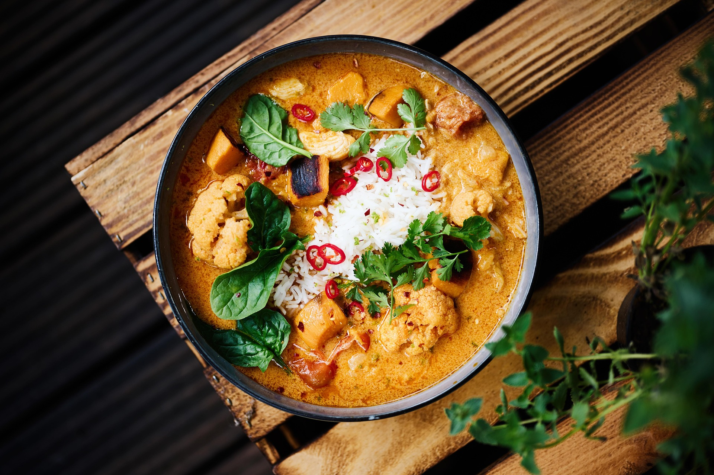

Home
Panang Curry Recipe

Description
Panang curry. Arguably the best dish ever invented. This Thai dish blends sweet, savory and spice to a masterful extent.
Lovely colourful dish to enjoy on a chilly fall or winters day.
Ingredients
- 3-4 tablespoons of Panang curry paste
- 1 can of full-fat coconut milk
- 1-2 tablespoons of Fish Sauce
- 1-2 teaspoons of palm sugar/ brown sugar
- 1 red bell pepper (sliced thin)
- 4 to 6 kaffir lime leaves (makrut lime leaves, torn or shredded)
- Optional: Handful of Thai basil leaves or green beans
- 1.5 cups of jasmine rice
- 2 cups of water (for cooking the rice)
- 500 grams of sliced meat or tofu
Steps
- Reduce the coconut milk. Pour half a can into a pan over medium heat. Cook for 2 to 3 minutes until it thickens and the oil starts to separate.
- Fry the paste. Add 2-3 tablespoons of Panang Curry Paste into the reduced coconut milk. Stir and cook for 3 minutes until dark and fragrant.
- Add protein. Add sliced chicken thighs or your preferred protein. Stir for two minutes to coat and seal the meat.
- Simmer. Pour in the remaining coconut milk and torn kaffir lime leaves. Cover the pan and simmer for 10-12 minutes until the meat is fully cooked.
- Season and serve. Stir in the fish sauce and palm sugar to taste. Cook for 2 more minutes, then serve over jasmine rice with sliced chili.